Imagine I want to recognize whether a string is a valid…
email address jdoe@cs.unc.edu
phone number (919) 555-1234
student ID 730123456
We could make a DFA or NFA for each of these.
But can we describe regular languages like these directly, with a compact notation instead of drawing a whole automaton?
Properties Assumed in These Lectures
Outline
Motivating This Week's Lectures
Properties Assumed in These Lectures
Patterns
Regular Expressions
Computational Power of Regular Expressions
Summary of Results
Consequences of These Results
Key Takeaways and Practice Tools
Properties Assumed in These Lectures
In these lectures, we will use the fact that the set of regular languages is closed under:
Union
Concatenation
Kleene Star
Let's define each of these and give sketches of the construction proofs.
Union
Definition (Union).
Let $L_1, L_2 \subseteq \Sigma^*$. The union of $L_1$ and $L_2$ is
\[
L_1 \cup L_2 \;=\; \{\, w \mid w \in L_1 \text{ or } w \in L_2 \,\}.
\]
Theorem.
If $L_1$ and $L_2$ are regular, then $L_1 \cup L_2$ is regular.
Example: If $L_1 = \{\text{cat}, \text{dog}\}$ and $L_2 = \{\text{bird}, \text{fish}\}$ are regular, then
\[
L_1 \cup L_2 = \{\text{cat}, \text{dog}, \text{bird}, \text{fish}\}
\]
is regular.
Union: Construction
Let $N_1$ and $N_2$ be NFAs with $L(N_1) = L_1$ and $L(N_2) = L_2$.
Construct $N'$ from all the states of $N_1$ and $N_2$, keeping their start states as $N'$'s start states and their accept states as $N'$'s accept states. $N'$ can nondeterministically begin in either machine, so $L(N') = L_1 \cup L_2$.
Concatenation
Definition (Concatenation).
Let $L_1, L_2 \subseteq \Sigma^*$. The concatenation of $L_1$ and $L_2$ is
\[
L_1 \circ L_2 \;=\; \{\, xy \mid x \in L_1 \text{ and } y \in L_2 \,\}.
\]
Theorem.
If $L_1$ and $L_2$ are regular, then $L_1 \circ L_2$ is regular.
Example: If $L_1 = \{\text{cat}, \text{dog}\}$ and $L_2 = \{\text{bird}, \text{fish}\}$ are regular, then
\[
L_1 \circ L_2 = \{\text{catbird}, \text{catfish}, \text{dogbird}, \text{dogfish}\}
\]
is regular.
Concatenation: Construction
Let $N_1$ and $N_2$ be NFAs with $L(N_1) = L_1$ and $L(N_2) = L_2$.
Construct $N'$ from all the states of $N_1$ and $N_2$, plus an $\varepsilon$-transition from every accept state of $N_1$ to the start states of $N_2$. $N'$'s start states are exactly $N_1$'s, and its accept states are exactly $N_2$'s, so $N'$ runs through $N_1$, crosses the $\varepsilon$, then runs through $N_2$, giving $L(N') = L_1 \circ L_2$.
Kleene Star
Definition (Kleene Star).
Let $L \subseteq \Sigma^*$. The Kleene star of $L$ is
\[
L^* \;=\; \{\, x_1 x_2 \cdots x_k \mid k \geq 0 \text{ and each } x_i \in L \,\}.
\]
Theorem.
If $L$ is regular, then $L^*$ is regular.
Example: If $L = \{\text{cat}, \text{dog}\}$ is regular, then
\[
L^* = \{\varepsilon, \text{cat}, \text{dog}, \text{catcat}, \text{catdog}, \text{dogcat}, \text{dogdog}, \dots\}
\]
is regular.
Kleene Star: Construction
Let $N$ be an NFA with $L(N) = L$.
Construct $N'$ from all the states of $N$ plus a new state $q_0$. An $\varepsilon$-transition from $q_0$ to $N$'s old start states lets $N'$ enter $N$; an $\varepsilon$-transition from every accept state of $N$ back to $q_0$ lets it loop. Making $q_0$ both a start and accept state means $N'$ can also accept immediately, so $L(N') = L^*$.
Patterns
Outline
Motivating This Week's Lectures
Properties Assumed in These Lectures
Patterns
Regular Expressions
Computational Power of Regular Expressions
Summary of Results
Consequences of These Results
Key Takeaways and Practice Tools
Patterns
Definition (Pattern).
Let $\Sigma$ be a finite alphabet.
A pattern is a string of symbols representing a set of strings in $\Sigma^*$.
Definition (Pattern Matching).
A string $x$ matches a pattern $\alpha$ iff $x$ is accepted by the language of $\alpha$.
\[
L(\alpha) = \{\, x \in \Sigma^* \mid x \text{ matches } \alpha \,\}
\]
Patterns
Definition (Atomic Patterns).
An atomic pattern over alphabet $\Sigma$ is of one of the following forms:
Definition (Compound Patterns).
A compound pattern (made up of patterns $\alpha$ and/or $\beta$) over alphabet $\Sigma$ is of one of the following forms:
We can also write concatenation by just placing the two patterns next to each other, with no $\circ$ symbol at all: $\alpha\beta$ means the same thing as $\alpha \circ \beta$.
Some Examples of Compound Patterns
Let $\Sigma = \{0,1\}$. Give the language for each pattern:
We will prove that some symbols/operations are redundant:
$\emptyset$
$\mathbf{\varepsilon}$
$a$
# $\implies$ redundant
@ $\implies$ redundant
$\cup$
$\cap$ $\implies$ redundant
$\circ$
$\sim$ $\implies$ redundant
$^*$
We will use the remaining symbols/operators to define regular expressions.
Proving Redundancy in Patterns
@
$ L(\text{@}) = \Sigma^*$ but we can already cover that with $L(\#^*)$
#
$L(\#)$ can be covered by taking the union of all single-character atomic patterns (e.g., if $\Sigma=\{a,b,c\}$, then $L(\#)$ can be described with the pattern $a \cup b \cup c$)
$\cap$
Redundant due to De Morgan’s laws: $\alpha \cap \beta ~ \equiv ~~ \sim (\sim \alpha ~\cup \sim \beta)$
$\sim$
Redundant, but the proof is complicated so just trust me on this one
Therefore, $\emptyset, \mathbf{\varepsilon}, a, \cup, \circ, ^*$ suffice to express all patterns.
Regular Expressions
Definition (Regular Expressions).
The set of regular expressions can be defined inductively using atomic patterns and operators. $R$ is a regular expression if $R$ is:
$a$, for some $a \in \Sigma$
$\mathbf{\varepsilon}$
$\mathbf{\emptyset}$
$R_1 \cup R_2$ where $R_1$ and $R_2$ are regular expressions
$R_1 \circ R_2$ where $R_1$ and $R_2$ are regular expressions
$R_1^*$ where $R_1$ is a regular expression
Your Turn: From Language to Regular Expression
Let's do the same exercise again, but now write regular expressions instead of patterns.
These are the same eight languages as before. Watch which ones get harder without the extra operators.
Exercises: From Language to Regular Expression
Let $\Sigma = \{0,1\}$. Give a regular expression for each:
Contains at least one 1 $\implies$ $(0\cup1)^*1(0\cup1)^*$
Starts with 0 and ends with 1 $\implies$ $0(0\cup1)^*1$
Even length $\implies$ $\big((0\cup1)(0\cup1)\big)^*$
Third-to-last symbol is a 0 $\implies$ $(0\cup1)^*0(0\cup1)(0\cup1)$
Does not start with 00 $\implies$ $\varepsilon \cup 0 \cup 1(0\cup1)^* \cup 01(0\cup1)^*$ (no $\sim$, so built case by case)
No two consecutive 0's $\implies$ $(1\cup01)^*(0\cup\varepsilon)$
Contains “01” but never “10” $\implies$ $0^*(01)1^*$ (structural insight: 0's must come before 1's)
Does not end with “10” $\implies$ $\varepsilon \cup 0 \cup 1 \cup (0\cup1)^*0(0\cup1) \cup (0\cup1)^*11$
Use this tool to help you work through these exercises:https://rtuggle99.github.io/regex-explorer.htmlNote: some texts use $\Sigma$ as regex shorthand for “any symbol in the alphabet,” so you might see 4's answer written as $\Sigma^*0\Sigma\Sigma$.
Computational Power of Regular Expressions
Outline
Motivating This Week's Lectures
Properties Assumed in These Lectures
Patterns
Regular Expressions
Computational Power of Regular Expressions
Summary of Results
Consequences of These Results
Key Takeaways and Practice Tools
Power of RegEx
Theorem.
Let $A \subseteq \Sigma^*$. The following statements are equivalent:
$A = L(\alpha)$ for some pattern $\alpha$,
$A = L(R)$ for some regular expression $R$,
$A$ is a regular language.
We will do this in two parts:
Part 1: RegEx $\leftrightarrow$ Pattern
Part 2: RegEx $\leftrightarrow$ Regular
Part 1: RegEx ↔ Pattern
Outline
Motivating This Week's Lectures
Properties Assumed in These Lectures
Patterns
Regular Expressions
Computational Power of Regular Expressions
Part 1: RegEx $\leftrightarrow$ Pattern
Part 2: RegEx $\leftrightarrow$ Regular
Summary of Results
Consequences of These Results
Key Takeaways and Practice Tools
RegEx $\implies$ Pattern
Assume $R$ is a regular expression.
By definition, every regular expression is constructed using symbols and operators that are also valid in patterns.
Therefore, $R$ is itself a valid pattern.
Pattern $\implies$ RegEx
Assume $\alpha$ is a pattern.
Recall from earlier: $\emptyset, \mathbf{\varepsilon}, a, \cup, \circ, {}^*$ suffice to express every pattern: the extra pattern operators ($\#$, $@$, $\cap$, $\sim$) are all redundant.
So $\alpha$ can be rewritten using only these six building blocks.
But these are exactly the building blocks of a regular expression.
Therefore, $\alpha$ is equivalent to some regular expression $R$.
Part 2: RegEx ↔ Regular
Outline
Motivating This Week's Lectures
Properties Assumed in These Lectures
Patterns
Regular Expressions
Computational Power of Regular Expressions
Part 1: RegEx $\leftrightarrow$ Pattern
Part 2: RegEx $\leftrightarrow$ Regular
Summary of Results
Consequences of These Results
Key Takeaways and Practice Tools
RegEx $\implies$ Regular
Want to prove:
If $A = L(R)$ for some regular expression $R$, then $A$ is a regular language.
We will do this using proof by induction.
RegEx $\implies$ Regular: Base Cases
Use the atomic regular expressions as base cases:
$a$, for $a \in \Sigma$
$\mathbf{\varepsilon}$
$\mathbf{\emptyset}$
For each, define an automaton that accepts exactly that language:
{
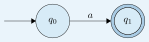
}
{
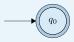
}
<4->{
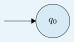
}
RegEx $\implies$ Regular: Inductive Step
Inductive Step: Suppose we are given a compound regular expression $R$.
Then $R$ can be written using other regular expressions $R_1$ and/or $R_2$ in one of the following ways:
$R = R_1 \cup R_2$
$R = R_1 \circ R_2$
$R = R_1^*$
Inductive Hypothesis (IH): Assume that $L(R_1)$ and $L(R_2)$ are regular.
Want to show:
$L(R_1 \cup R_2)$ is a regular language
$L(R_1 \circ R_2)$ is a regular language
$L(R_1^*)$ is a regular language
This is a proof by cases.
Case: $R = R_1 \cup R_2$
$L(R_1) \text{ and } L(R_2) \text{ are regular}$
(Inductive Hypothesis)
$L(R_1 \cup R_2) = L(R_1) \cup L(R_2)$
(Definition of compound pattern)
$L(R_1) \cup L(R_2) \text{ is regular}$
(Regular languages closed under $\cup$)
$L(R_1 \cup R_2) \text{ is regular}$
(By substitution)
Case: $R = R_1 \circ R_2$
$L(R_1) \text{ and } L(R_2) \text{ are regular}$
(Inductive Hypothesis)
$L(R_1 \circ R_2) = L(R_1) \circ L(R_2)$
(Definition of compound pattern)
$L(R_1) \circ L(R_2) \text{ is regular}$
(Regular languages closed under $\circ$)
$L(R_1 \circ R_2) \text{ is regular}$
(By substitution)
Case: $R = R_1^*$
$L(R_1) \text{ is regular}$
(Inductive Hypothesis)
$L(R_1^*) = L(R_1)^*$
(Definition of compound pattern)
$L(R_1)^* \text{ is regular}$
(Regular languages closed under $*$)
$L(R_1^*) \text{ is regular}$
(By substitution)
Regular $\implies$ RegEx
Want to prove:
If $A$ is a regular language, then $A = L(R)$ for some regular expression $R$.
Interpretation: Every language accepted by a finite automaton can be expressed as a regular expression.
Proof Idea: Slowly convert an automaton into a regular expression
Given an automaton for a language $L$
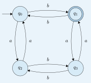
Step 1: Add new start and accept states
Add a new start state $q_s$ and a new final state $q_f$, with $\varepsilon$-transitions
Remove $q_1$: its edges become new paths, colored to show where they came from. $q_0$ already has a self-loop, so for now the old and new paths sit side by side, not yet combined.
Step 2: Begin removing States
Merge with $\cup$: the new paths through $q_1$ combine with $q_0$'s existing self-loop
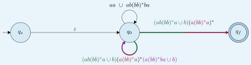
Step 2: Begin removing States
Merge with $\cup$: the new paths through $q_1$ combine with $q_0$'s existing self-loop
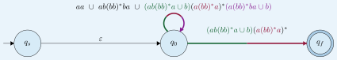
Step 2: Begin removing States
Remove state $q_1$: uncolor edges
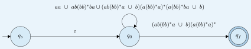
Step 2: Begin removing States
Before removing $q_0$, highlight everything touching it: the entry from $q_s$, its own loop, and the exit to $q_f$.
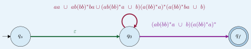
Step 2: Begin removing States
Remove state $q_0$: $q_s \to q_f$ is now a single path, the starred self-loop concatenated with the path to $q_f$
\[
\Big(
{\color{pathred}aa \cup ab(bb)^*ba \cup (ab(bb)^*a \cup b)(a(bb)^*a)^*(a(bb)^*ba \cup b)}
\Big)^* {\color{pathviolet}(ab(bb)^*a \cup b)(a(bb)^*a)^*}
\]
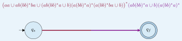
The Final Regular Expression
Since $q_s \to q_0$ is $\varepsilon$, the final regex is this loop starred, concatenated with the path from $q_0$ to $q_f$:
\[
\Big(
{\color{pathred}aa \cup ab(bb)^*ba \cup (ab(bb)^*a \cup b)(a(bb)^*a)^*(a(bb)^*ba \cup b)}
\Big)^* {\color{pathviolet}(ab(bb)^*a \cup b)(a(bb)^*a)^*}
\]
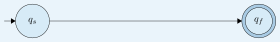
Remark: This regex matches the strings that the original NFA accepts.
Try It Yourself
Try out the conversion on this DFA. Note the order in which you remove the states, and the resulting regex you get. The order doesn't affect the validity of the regex, but it might make it look simpler or more complex.
Theorem.
Let $A \subseteq \Sigma^*$. The following statements are equivalent:
$A = L(\alpha)$ for some pattern $\alpha$,
$A = L(R)$ for some regular expression $R$,
$A$ is a regular language.
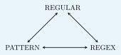
Consequences of These Results
Outline
Motivating This Week's Lectures
Properties Assumed in These Lectures
Patterns
Regular Expressions
Computational Power of Regular Expressions
Summary of Results
Consequences of These Results
Key Takeaways and Practice Tools
Consequences of These Results
We now know that regular expressions, DFAs, and NFAs recognize the same class of languages. Two practical consequences follow:
To prove a language is regular, it suffices to construct any one of a regular expression, a DFA, or an NFA for it.
To prove regular languages are closed under an operation, it suffices to give the construction using any one of these three models.
Consequence 1: Proving Regularity
For example, we can prove
\[
L = \{\, w \in \{0,1\}^* \mid w \text{ has at least one } 1 \,\}
\]
is regular by providing any of the following:
$(0 \cup 1)^* \, 1 \, (0 \cup 1)^*$
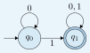
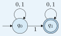
Consequence 2: Proving Closure Properties
We can prove regular languages are closed under a new operation by giving the construction in whichever model makes the proof cleanest.
We'll illustrate this with one operation, proved three different ways.
Prefix
Definition (Prefix).
Let $L \subseteq \Sigma^*$. The prefix of $L$ is
\[
\mathrm{Prefix}(L) \;=\; \{\, x \in \Sigma^* \mid xy \in L \text{ for some } y \in \Sigma^* \,\}.
\]
Theorem.
If $L$ is regular, then $\mathrm{Prefix}(L)$ is regular.
Example: If $L = \{\text{cats}, \text{dogs}\}$ is regular, then
\[
\mathrm{Prefix}(L) = \{\varepsilon, \text{c}, \text{ca}, \text{cat}, \text{cats}, \text{d}, \text{do}, \text{dog}, \text{dogs}\}
\]
is regular.
A Quick Note Before We Continue
Don't worry if you don't follow every detail of the proofs that follow. The point is just to show that closure properties like this one can be proven using regular expressions, DFAs, or NFAs. Pick whichever style makes the most sense to you.
Closure via RegEx
Outline
Motivating This Week's Lectures
Properties Assumed in These Lectures
Patterns
Regular Expressions
Computational Power of Regular Expressions
Summary of Results
Consequences of These Results
Closure via RegEx
Closure via DFA
Closure via NFA
Key Takeaways and Practice Tools
Closure Under Prefix: Proof via Regular Expressions
Want to prove: If $L$ is regular, then $\mathrm{Prefix}(L)$ is regular.
We will do this using proof by induction on the structure of a regular expression for $L$.
Specifically, we want to show: for each regular expression $R$, there exists a regular expression $P$ such that $L(P) = \mathrm{Prefix}(L(R))$.
Closure Under Prefix: Base Cases
Base cases: the atomic regular expressions.
$a$, for $a \in \Sigma$
$\varepsilon$
$\emptyset$
The corresponding $P$:
$\varepsilon \cup a$
$\varepsilon$
$\emptyset$
Closure Under Prefix: Inductive Step
Inductive Step: Suppose we are given a compound regular expression $R$.
Then $R$ can be written using other regular expressions $R_1$ and/or $R_2$ in one of the following ways:
$R = R_1 \cup R_2$
$R = R_1 \circ R_2$
$R = R_1^*$
Inductive Hypothesis (IH): Assume there exist regular expressions $P_1$ and $P_2$ such that $L(P_1) = \mathrm{Prefix}(L(R_1))$ and $L(P_2) = \mathrm{Prefix}(L(R_2))$.
Want to show:
A regular expression $P$ with $L(P) = \mathrm{Prefix}(L(R_1 \cup R_2))$
A regular expression $P$ with $L(P) = \mathrm{Prefix}(L(R_1 \circ R_2))$
A regular expression $P$ with $L(P) = \mathrm{Prefix}(L(R_1^*))$
This is a proof by cases.
Closure Under Prefix: Case $R = R_1 \cup R_2$
The following regular expression represents $\mathrm{Prefix}(L(R))$:
\[P_1 \cup P_2\]
Explanation: A prefix of a string in $L(R_1) \cup L(R_2)$ is a prefix of a string in either $L(R_1)$ or $L(R_2)$.
Closure Under Prefix: Case $R = R_1 \circ R_2$
We'll consider this in two cases:
Case 1: $L(R_2) = \emptyset$
Case 2: $L(R_2) \neq \emptyset$
Closure Under Prefix: Case $R = R_1 \circ R_2$
Case 1: $L(R_2) = \emptyset$
The following regular expression represents $\mathrm{Prefix}(L(R))$:
\[\emptyset\]
Explanation: If $L(R_2) = \emptyset$, then $L(R) = L(R_1) \circ L(R_2) = \emptyset$ too, so $\mathrm{Prefix}(L(R)) = \emptyset$.
Closure Under Prefix: Case $R = R_1 \circ R_2$
Case 2: $L(R_2) \neq \emptyset$
The following regular expression represents $\mathrm{Prefix}(L(R))$:
\[P_1 \cup \big(R_1 \circ P_2\big)\]
Explanation: A prefix of $xy$ (with $x \in L(R_1)$, $y \in L(R_2)$) is either a prefix of $x$, or all of $x$ followed by a prefix of $y$.
Brief Tangent: Why Not $P_1 \circ P_2$?
$R = cats\;=\;\underbrace{\textcolor{pathgreen-a11y}{ca}}_{\textcolor{pathgreen-a11y}{R_1}}\underbrace{\textcolor{pathviolet}{ts}}_{\textcolor{pathviolet}{R_2}}$
$\mathrm{Prefix}(L(R)) = \{\textcolor{pathgreen-a11y}{\varepsilon},\ \textcolor{pathgreen-a11y}{c},\ \textcolor{pathgreen-a11y}{ca},\ \textcolor{pathgreen-a11y}{ca}\textcolor{pathviolet}{t},\ \textcolor{pathgreen-a11y}{ca}\textcolor{pathviolet}{ts}\}$
$P_1 \circ P_2$ would produce $\textcolor{pathviolet}{t}$, $\textcolor{pathviolet}{ts}$, $\textcolor{pathgreen-a11y}{c}\textcolor{pathviolet}{t}$, and $\textcolor{pathgreen-a11y}{c}\textcolor{pathviolet}{ts}$, where $\mathrm{Prefix}(L(R))$ does not
Closure Under Prefix: Case $R = R_1^*$
The following regular expression represents $\mathrm{Prefix}(L(R))$:
\[\varepsilon \cup \big(R_1^* \circ P_1\big)\]
Explanation: A prefix of $R$ is either empty, or some number of full copies of $R_1$ followed by a prefix of the next.
Brief Tangent: Why Not $P_1^*$?
$R = (cats)^*\;=\;\big(\underbrace{\textcolor{pathgreen-a11y}{cats}}_{\textcolor{pathgreen-a11y}{R_1}}\big)^*$
$\mathrm{Prefix}(L(R)) = \{\textcolor{pathgreen-a11y}{\varepsilon},\ \textcolor{pathgreen-a11y}{c},\ \textcolor{pathgreen-a11y}{ca},\ \textcolor{pathgreen-a11y}{cat},\ \textcolor{pathgreen-a11y}{cats},\ \textcolor{pathgreen-a11y}{catsc},\ \textcolor{pathgreen-a11y}{catsca},\ \textcolor{pathgreen-a11y}{catscat},\ \textcolor{pathgreen-a11y}{catscats},\ \ldots\}$
$P_1^*$ would also produce $\textcolor{pathgreen-a11y}{cc}$ (a prefix of $R_1$, followed by another prefix of $R_1$, rather than a full copy), where $\mathrm{Prefix}(L(R))$ does not
Closure via DFA
Outline
Motivating This Week's Lectures
Properties Assumed in These Lectures
Patterns
Regular Expressions
Computational Power of Regular Expressions
Summary of Results
Consequences of These Results
Closure via RegEx
Closure via DFA
Closure via NFA
Key Takeaways and Practice Tools
Closure Under Prefix: Proof via DFA
Suppose we have a DFA $M$ recognizing $L$. To reduce clutter, transitions into the sink state are left unlabeled.
Construct $M'$ by making every state that can reach an accept state itself an accept state, so $L(M') = \mathrm{Prefix}(L(M))$.
Proof: Construction
Let $M = (Q, \Sigma, \delta, q_0, F)$ be a DFA with $L(M) = L$.
Construct a new DFA $M' = (Q, \Sigma, \delta, q_0, F')$ where:
$Q' = Q$
$q_0' = q_0$
$\delta' = \delta$
$F' = \{\, q \in Q \mid \hat\delta(q,y) \in F \text{ for some } y \in \Sigma^* \,\}$, the set of states from which some accept state is reachable
Acceptance
Recall the definition of acceptance:
Definition (DFA Acceptance).
DFA $M = (Q, \Sigma, \delta, q_0, F)$ accepts a string $x$ if $\hat\delta(q_0, x) \in F$. That is,
\[
x \in L(M) \iff \hat\delta(q_0, x) \in F.
\]
Proof: Correctness (Forward Direction)
Forward direction:
Suppose $x \in \mathrm{Prefix}(L)$. Then $xy \in L$ for some $y \in \Sigma^*$.
\[
xy \in L \implies \hat\delta(q_0, xy) \in F
\]
We need the fact that $\hat\delta(q_0, xy) = \hat\delta\big(\hat\delta(q_0,x), y\big)$. You proved the analogous fact for NFAs, $\hat\Delta(S, xy) = \hat\Delta\big(\hat\Delta(S,x), y\big)$, in your homework; the same argument works for DFAs.
So $\hat\delta\big(\hat\delta(q_0,x), y\big) \in F$ for some $y$, which by definition of $F'$ means $\hat\delta(q_0,x) \in F'$.
Hence $x \in L(M')$.
Proof: Correctness (Backward Direction)
Backward direction:
Suppose $x \in L(M')$. Then $\hat\delta(q_0,x) \in F'$.
By definition of $F'$, there exists some $y \in \Sigma^*$ with $\hat\delta\big(\hat\delta(q_0,x), y\big) \in F$.
\[
\hat\delta\big(\hat\delta(q_0,x), y\big) = \hat\delta(q_0, xy)
\]
So $\hat\delta(q_0,xy) \in F$, meaning $xy \in L$.
Hence $x \in \mathrm{Prefix}(L)$.
Closure via NFA
Outline
Motivating This Week's Lectures
Properties Assumed in These Lectures
Patterns
Regular Expressions
Computational Power of Regular Expressions
Summary of Results
Consequences of These Results
Closure via RegEx
Closure via DFA
Closure via NFA
Key Takeaways and Practice Tools
Closure Under Prefix: Proof via NFA
Suppose we have an NFA $N$ recognizing $L$. To reduce clutter, transitions into the sink state are left unlabeled. (We don't technically need a sink state since this is an NFA.)
Construct $N'$ by making every state that can reach an accept state itself an accept state, so $L(N') = \mathrm{Prefix}(L(N))$.
Proof: Construction
This mirrors the DFA construction exactly, with reachability of a set of states replacing reachability from a single state.
Let $N = (Q, \Sigma, \Delta, S, F)$ be an NFA (possibly with $\varepsilon$-transitions) with $L(N) = L$.
Construct a new NFA $N' = (Q, \Sigma, \Delta, S, F')$ where:
$Q' = Q$
$S' = S$
$\Delta' = \Delta$
$F' = \{\, q \in Q \mid \hat\Delta(\{q\},y) \cap F \neq \emptyset \text{ for some } y \in \Sigma^* \,\}$, the set of states from which some accept state is reachable
Acceptance
Recall the definition of acceptance:
Definition (NFA Acceptance).
NFA $N = (Q, \Sigma, \Delta, S, F)$ accepts a string $x$ if $\hat\Delta(S, x) \cap F \neq \emptyset$. That is,
\[
x \in L(N) \iff \hat\Delta(S, x) \cap F \neq \emptyset.
\]
Proof: Correctness (Forward Direction)
Forward direction:
Suppose $x \in \mathrm{Prefix}(L)$. Then $xy \in L$ for some $y \in \Sigma^*$.
\[
xy \in L \implies \hat\Delta(S, xy) \cap F \neq \emptyset
\]
You proved that $\hat\Delta(S, xy) = \hat\Delta\big(\hat\Delta(S,x), y\big)$ in your homework.
So some state $q \in \hat\Delta(S,x)$ has $\hat\Delta(\{q\}, y) \cap F \neq \emptyset$, which by definition of $F'$ means $q \in F'$.
So $\hat\Delta(S,x) \cap F' \neq \emptyset$, hence $x \in L(N')$.
Proof: Correctness (Backward Direction)
Backward direction:
Suppose $x \in L(N')$. Then $\hat\Delta(S,x) \cap F' \neq \emptyset$, so some $q \in \hat\Delta(S,x)$ is in $F'$.
By definition of $F'$, there exists some $y \in \Sigma^*$ with $\hat\Delta(\{q\}, y) \cap F \neq \emptyset$.
\[
\hat\Delta(S, xy) \;\supseteq\; \hat\Delta(\{q\}, y)
\]
So $\hat\Delta(S,xy) \cap F \neq \emptyset$, meaning $xy \in L$.
Hence $x \in \mathrm{Prefix}(L)$.
Key Takeaways and Practice Tools
Outline
Motivating This Week's Lectures
Properties Assumed in These Lectures
Patterns
Regular Expressions
Computational Power of Regular Expressions
Summary of Results
Consequences of These Results
Key Takeaways and Practice Tools
Key Takeaways and Practice Tools
Key Takeaways:
DFAs, NFAs, and regular expressions all describe the same class of languages.
We can prove closure properties of regular languages using any of those three.
![Diagram of the union construction. Two boxes are shown, labeled N1 and N2. N1 contains a start state s1 (with an incoming arrow) and an accept state f1, drawn as a double circle, with a row of dots between them representing N1's other states and transitions. N2 has the identical layout: start state s2, accept state f2 as a double circle, and dots for its other states. A larger rounded box labeled N-prime encloses both N1 and N2, showing that the combined machine keeps both start states and both accept states, so it can nondeterministically begin in either N1 or N2.](diagrams/diagram_00.svg)
![Diagram of the concatenation construction. Two boxes are shown, labeled N1 and N2. N1 contains start state s1 and, in this final version, state f1 is no longer an accept state (its double circle is removed) since it now has an epsilon-transition, drawn as a curved arrow labeled epsilon, leading down into N2's start state s2. N2 still contains its own accept state f2, drawn as a double circle. A larger rounded box labeled N-prime encloses both, showing the combined machine starts in N1, crosses the epsilon-transition after N1 accepts, then runs through N2 to its accept state.](diagrams/diagram_01.svg)
![Diagram of the Kleene-star construction. A box labeled N contains N's old start state s and old accept state f, drawn as a double circle. In this final version, a new state q0 sits outside the box, drawn as a double circle to mark it as both a start and accept state. Two epsilon-transitions, drawn as curved arrows labeled epsilon, run from q0 into s, and from f back to q0. A larger rounded box labeled N-prime encloses q0 and the N box, showing that the combined machine can accept immediately at q0 (the empty string) or loop through N any number of times via the epsilon-transitions.](diagrams/diagram_02.svg)


![8-state DFA that recognizes exactly the two words cats and dogs. From start state q0, one chain spells C-A-T through q1, q2, q3, then an s-transition to accept state q7 (double circle), completing cats. A second chain from q0 spells D-O-G through q4, q5, q6, then an s-transition to the same q7, completing dogs. Every other letter not on these two paths leads to an unlabeled central sink state, which has no way to reach q7. On the first overlay step, only q7 is an accept state. On the second overlay step, q0 through q6 all become accept states too (shown as double circles), while the sink stays a non-accepting single circle, illustrating that the prefix-closed language accepts any prefix of cats or dogs, such as c, ca, cat, d, do, or dog.](diagrams/diagram_32.svg)
![8-state NFA that recognizes exactly the two words cats and dogs (the same shape as the DFA version). From start state q0, one chain spells C-A-T through q1, q2, q3, then an s-transition to accept state q7 (double circle), completing cats. A second chain from q0 spells D-O-G through q4, q5, q6, then an s-transition to the same q7, completing dogs. Every other letter not on these two paths leads to an unlabeled central sink state, which has no way to reach q7. On the first overlay step, only q7 is an accept state. On the second overlay step, q0 through q6 all become accept states too (shown as double circles), illustrating that the prefix-closed language accepts any prefix of cats or dogs.](diagrams/diagram_33.svg)